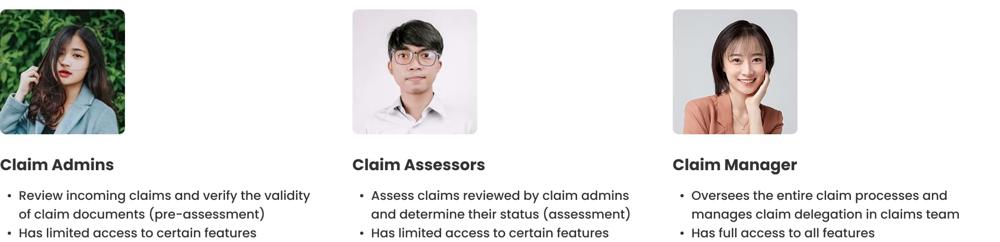

Role
Design Lead
Claim Middleware is a claims management platform that streamlines the entire claim lifecycle for the Sunday claims team. This project aimed to resolve the inefficiencies of the existing manual insurance claim process. That process involved using multiple spreadsheets and documents to assess incoming claims, track their processing status, and delegate claim assignments. These inefficiencies resulted in longer claim processing times and lower claim processing rates for the team.
Sunday's existing claims management system relies on inefficient manual processes, such as spreadsheets and documents. This has led to slow claim processing times, negatively impacting operational efficiency and customer satisfaction.
We identified 3 distinct user roles: Claim Admins, Claim Assessors, and Claim Manager. Each role has its own duties and different levels of access to features on the platform.
At the beginning of the project, we held discussions with the claims team and the Development Director to plan how to improve the existing claims process for greater efficiency. Through focus group discussions with the team, we identified key pain points in the current process.
We conducted a competitive analysis of leading claims management platforms to identify their strengths, weaknesses, and opportunities for innovation. This benchmarking informed our design decisions and helped us identify established design patterns, interaction models, and features that are recognized as industry best practices.
Our goal was to develop an MVP version of a claims management platform for Sunday Insurance, namely Claim Middleware. This platform will streamline the entire claims lifecycle by enabling the Sunday claims team to seamlessly assess incoming claims, track claim processing status, and delegate claim assignments.
My task was to design the end-to-end claim processing workflows from pre-assessment, assessment, to assessment results from scratch. I also facilitated the team's understanding of these complex workflows by creating detailed, annotated flowcharts to map out the user journey.
After successfully mapping out the overall user journey, I pivoted to the wireframing phase for key pages such as the claim list and claim details. Utilizing existing design systems and UI components, my objective was to create a scalable and cohesive design architecture. By doing so, I aimed to ensure brand consistency and facilitate easier design updates in the future.

 Claim list page, from where the claims team can view the list of submitted claims, add new claims, and adjust claim settings
Claim list page, from where the claims team can view the list of submitted claims, add new claims, and adjust claim settings
 Claim details page, which allows the claims team to review claim information and process the claim
Claim assessment page, which allows Claim Assessors to review claim information, assess claim amount, and decide claim status
Claim details page, which allows the claims team to review claim information and process the claim
Claim assessment page, which allows Claim Assessors to review claim information, assess claim amount, and decide claim status
 Client configuration, from where clients can be categorized as type 1 (can be processed directly) or 2 (need AdMedika review)
Client configuration, from where clients can be categorized as type 1 (can be processed directly) or 2 (need AdMedika review)
 Claim delegation, which was one of the most requested features during the pilot phase
Claim delegation, which was one of the most requested features during the pilot phase
 Creating claim, which allows the claims team to create a new claim for instances where claims are submitted outside of Jolly super app
Creating claim, which allows the claims team to create a new claim for instances where claims are submitted outside of Jolly super app
 User flow for claim submission via Jolly super app, from submitting a claim to viewing claim history and status
User flow for claim submission via Jolly super app, from submitting a claim to viewing claim history and status